Borderless
Visitors sketch an element of a world. A fine-tuned diffusion model repaints each sketch in watercolour and places it into a shared 360° environment, which grows with every drawing and can be explored in VR. I led the machine learning.
Every sketch becomes part of the world.
A visitor picks a category (mushroom, flower, tree, mountain, cloud or planet) and draws their own version on a browser canvas. The fine-tuned model repaints the drawing in watercolour, and it is placed automatically at the right depth in a shared 360° world built in Three.js. As more people draw, the world fills up, and you can step inside it with a VR headset.
We were a team of three. I owned the machine learning end to end: collecting and cleaning the training data, training and evaluating four LoRA fine-tunes, integrating ControlNet so the sketch shapes the output, and writing the backend that turns a browser drawing into a finished asset in the world.
Six categories, about 600 images, one consistent hand.
We agreed a painterly watercolour style as the target, after botanical illustrators such as Vincent Jeannerot, and each of us gathered images for two categories. I built the cleaning pipeline: remove_backgrounds.py strips every background with rembg, resize_images.py standardises to 512 × 512, and caption_images.py writes a category caption in a shared format, the text that guides training.
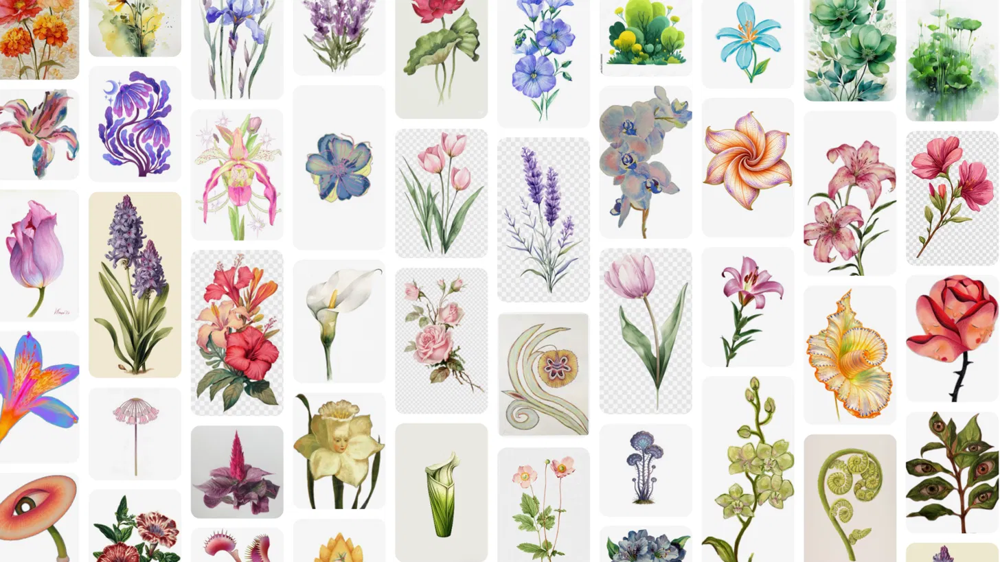
Background removal was the weak link. It handled hard-edged subjects cleanly (right) but ghosted around flowers that faded softly into their backgrounds (left), so those images were cut from the set.
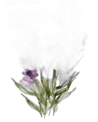
Four versions, each fixing what the last got wrong.
We trained four LoRAs on Stable Diffusion 1.5 before settling on the fourth. After each run I generated across all six categories, named the failure, and changed one thing to fix it: the data, the capacity, or the training length. That discipline, rather than blind hyperparameter search, is what produced a model worth using.
-
V1Transparent backgrounds · rank 16 · 1,500 stepsBlending
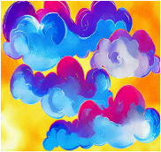
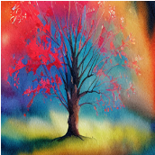
Subjects bled into the background. Many training images held several objects, so the model struggled to produce one well-formed subject.
-
V2New single-subject set, white backgrounds · rank 16 · 1,500 stepsUndertrained
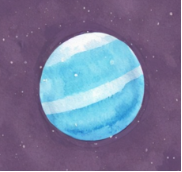
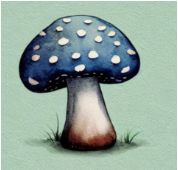
Clean, distinct subjects, but too little capacity and training to carry the brushstroke texture we wanted.
-
V3Same set · rank 32 · 3,000 stepsTrees
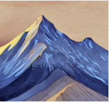
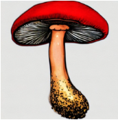
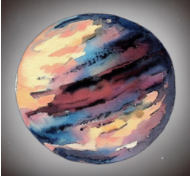
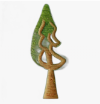
Doubling rank and steps brought the watercolour through. Trees still failed to form clean, recognisable shapes.
-
V4Pruned tree subset · V3 settingsFinal
Removing tree images that were too complex or ambiguous fixed the trees. All six categories generated cleanly, and this version ran in the final demo.
Making the sketch matter, without tracing it.
ControlNet scribble conditioning lets the visitor's drawing guide the shape of the output, not just the prompt. Its strength is a balancing act: too low and the sketch is ignored, too high and the result looks mechanically traced and the painterly quality collapses.
The right value differed by category, so after iterative testing I set one per category. We also injected the visitor's chosen colour into the prompt, so that even when the shape drifts, the result stays anchored to what they had in mind.
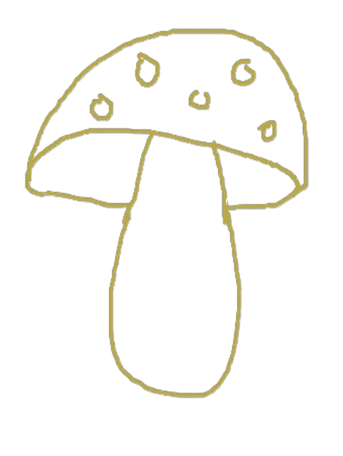
From a line in the browser to a painting in the world.
Six stages connect a drawing to the world. I built the middle of it, from the file watcher to the cut-out asset; the server and the world were built by my teammates.
- No.StageInOut
- 01Sketchworld.htmlA drawing, a category and a colourSketch file, with category and colour in its name
- 02Watchwatcher.py · mineNew sketch fileCategory and colour, parsed from the filename
- 03Generategenerate.py · mineSketch, and a prompt with category and colourWatercolour image from SD 1.5, ControlNet and the LoRA
- 04Cut outrembg, in generate.py · mineWatercolour imageTransparent PNG in outputs/[category]/
- 05Serveserver.pyNew assetAsset served to the browser by Flask
- 06Placeworld.html, Three.jsAsset and its categoryPlaced at the category's depth layer, viewable in VR
Flat paintings, real depth.
Each category sits at a fixed depth: planets and mountains behind, flowers and mushrooms in front. As you look around, the layers move at different rates, which gives the world real depth even though every asset is a flat painting.
We first tried full 3D meshes with TripoSR, but every tool we tested produced distorted geometry. Switching to 2D parallax layers was faster, more stable, and suited the watercolour look better.
What worked, and what we didn't fully solve.
Targeted iteration
Four runs, each fixing one named failure (transparent backgrounds, multi-subject data, undertraining, tree complexity), produced a noticeably stronger model than any single run would have.
One consistent style
The watercolour held across all six categories, so the world reads as one place rather than a pile of unrelated generations. That took dataset curation as much as training.
Pivoting early
When 3D mesh generation failed, moving to 2D parallax was the right call: faster to build, visually stable, and closer to the aesthetic.
Soft edges, twice
When the LoRA produced a half-formed subject, rembg could not separate it cleanly and a semi-transparent shape landed in the world. A delete button worked around it, at some cost to the seamless experience.
Fidelity against paint
Even with per-category tuning, some generations drifted from the sketch, and raising strength to compensate made them rigid. A consistent balance across every drawing stayed out of reach.